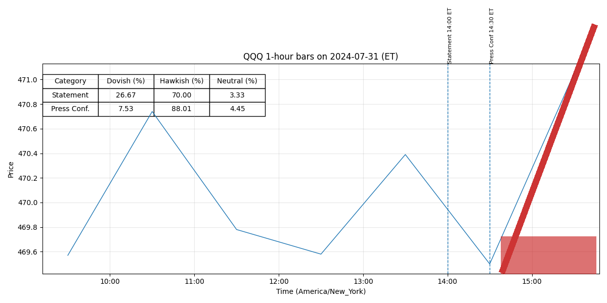

Pres 20240731
Legend: Interpretation of Colors and Intensities
- Dovish (green): easing, lower rates, accommodative policy.
- Neutral (yellow): balanced or data-dependent stance.
- Hawkish (red): tightening, higher rates, restrictive policy.
Color intensity = strength of stance (darker = stronger).
Purple highlight = newly added strong sentences.
July 31, 2024 Chair Powell’s Press Conference FINAL
Transcript of Chair Powell’s Press Conference
July 31, 2024
CHAIR POWELL.
Good afternoon.
My colleagues and I remain squarely focused on
achieving our dual-mandate goals of maximum employment and stable prices for the benefit of
the American people.
Our economy has made considerable progress toward both goals over the
past two years.
The labor market has come into better balance, and the unemployment rate
remains low.
Inflation has eased substantially from a peak of 7 percent to 2.5 percent.
We are
strongly committed to returning inflation to our 2 percent goal in support of a strong economy
that benefits everyone.
Today, the FOMC decided to leave our policy interest rate unchanged and to continue to
reduce our securities holdings.
We are maintaining our restrictive stance of monetary policy in
order to keep demand in line with supply and reduce inflationary pressures.
We are attentive to
risks on both sides of our dual mandate, and I will have more to say about monetary policy after
briefly reviewing economic developments.
Recent indicators suggest that economic activity has continued to expand at a solid
pace.
GDP growth moderated to 2.1 percent in the first half of the year, down from 3.1 percent
last year.
Private domestic final purchases, or PDFP—which excludes inventory investment,
government spending, and net exports and usually sends a clearer signal of underlying demand—
grew at a 2.6 percent pace over that same period, the first half.
Growth of consumer spending
has slowed from last year’s robust pace but remains solid.
Investment in equipment and
intangibles has picked up from its anemic pace last year.
In the housing sector, investment
stalled in the second quarter after a strong rise in the first.
Improving supply conditions have
supported resilient demand and the strong performance of the U.S. economy over the past year.
Page 1 of 25
July 31, 2024 Chair Powell’s Press Conference FINAL
In the labor market, supply and demand conditions have come into better balance.
Payroll job gains averaged 177,000 jobs per month in the second quarter—a solid pace, but
below that seen in the first quarter.
The unemployment rate has moved up but remains low at
4.1 percent.
Strong job creation over the past couple of years has been accompanied by an
increase in the supply of workers, reflecting increases in participation among individuals aged
25 to 54 years and a strong pace of immigration.
Nominal wage growth has eased over the past
year, and the jobs-to-workers gap has narrowed.
Overall, a broad set of indicators suggests that
conditions in the labor market have returned to about where they stood on the eve of the
pandemic—strong, but not overheated.
Inflation has eased notably over the past two years but remains somewhat above our
longer-run goal of 2 percent.
Total PCE prices rose 2.5 percent over the 12 months ending in
June; excluding the volatile food and energy categories, core PCE prices rose
2.6 percent.
Longer-term inflation expectations appear to remain well anchored, as reflected in a
broad range of surveys of households and businesses and forecasters, as well as measures from
financial markets.
My colleagues and I are acutely aware that high inflation imposes significant hardship, as
it erodes purchasing power, especially for those least able to meet the higher costs of essentials
like food, housing, and transportation.
Our monetary policy actions are guided by our dual
mandate to promote maximum employment and stable prices for the American people.
In
support of these goals, the Committee decided at today’s meeting to maintain the target range for
the federal funds rate at 5¼ to 5½ percent and to continue reducing our securities holdings.
As
the labor market has cooled and inflation has declined, the risks to achieving our employment
Page 2 of 25
July 31, 2024 Chair Powell’s Press Conference FINAL
and inflation goals continue to move into better balance.
Indeed, we’re attentive to the risks to
both sides of our dual mandate.
We’ve stated that we do not expect it will be appropriate to reduce the target range for the
federal funds rate until we have gained greater confidence that inflation is moving sustainably
toward 2 percent.
The second quarter’s inflation readings have added to our confidence, and
more good data would further strengthen that confidence.
We will continue to make our
decisions meeting by meeting.
We know that reducing policy restraint too soon or too much
could result in a reversal of the progress we have seen on inflation.
At the same time, reducing
policy restraint too late or too little could unduly weaken economic activity and employment.
In
considering any adjustments to the target range for the federal funds rate, the Committee will
carefully assess incoming data, the evolving outlook, and the balance of risks.
As the economy evolves, monetary policy will adjust in order to best promote our
maximum-employment and price-stability goals.
If the economy remains solid and inflation
persists, we can maintain the current target range for the federal funds rate as long as appropriate.
If the labor market were to weaken unexpectedly or inflation were to fall more quickly than
anticipated, we are prepared to respond.
Policy is well positioned to deal with the risks and
uncertainties that we face in pursuing both sides of our dual mandate.
The Fed has been assigned two goals for monetary policy—maximum employment and
stable prices.
We remain committed to bringing inflation back down to our 2 percent goal and to
keeping longer-term inflation expectations well anchored.
Restoring price stability is essential to
achieving maximum employment and stable prices over the longer run.
Our success in
delivering on these goals matters to all Americans.
We understand that our actions affect
communities, families, and businesses across the country.
Everything we do is in service to our
Page 3 of 25
July 31, 2024 Chair Powell’s Press Conference FINAL
public mission.
We at the Fed will do everything we can to achieve our maximum-employment
and price-stability goals.
Thank you.
I look forward to your questions.
MICHELLE SMITH.
Jeanna.
JEANNA SMIALEK.
Jeanna Smialek from the New York Times.
Thanks for taking our
questions.
Markets pretty much entirely expect a rate cut in September at this stage.
I wonder if
you think that’s a reasonable expectation, and, if so, why not just make the move today?
CHAIR POWELL.
So on September, let me say this.
We, we have made no
decisions about future meetings, and that includes the September meeting.
The broad sense of
the Committee is that the economy is moving closer to the point at which it will be appropriate to
reduce our policy rate.
In that, we will be data dependent but not data point dependent, so it will
not be a question of responding specifically to one or two data releases.
The question will be
whether the totality of the data, the evolving outlook, and the balance of risks are consistent with
rising confidence on inflation and maintaining a solid labor market.
If that test is met, a
reduction in our policy rate could be on the table as soon as the next meeting in September.
So you asked, why not today?
And I would just say, again, that the broad sense of the
Committee is that we’re getting closer to the point at which it will be appropriate to reduce our
policy rate but that we’re not quite at that point yet.
Howard.
HOWARD SCHNEIDER.
So just to, to follow up on that a bit, if inflation behaves as
you expect between now and September, would you regard a cut in September as sort of the
baseline scenario right now?
So I guess I would—I would think about it this way.
I’ll give an
example of, of cases in which it would be appropriate to cut and maybe that it wouldn’t be
Page 4 of 25
July 31, 2024 Chair Powell’s Press Conference FINAL
appropriate to cut.
So if we were to see, for example, inflation moving down quickly or more or
less in line with expectations, growth remains, let’s say, reasonably strong, and the labor market
remains, you know, consistent with its current condition, then I would think that a, a rate cut
could be on the table at the September meeting.
If, if inflation were to prove, you know, sticky and we were to see higher readings from
inflation, disappointing readings, we would weigh that along with the other things.
You know, I
think it’s going to be not just any one thing.
It’s going to be the inflation data, it’s going to be
the employment data, it’s going to be the balance of risks as we see it—it’s going to be the
totality of all of that that would help us make this decision.
And just to follow up on that—specifically, in what ways
right now, given all you’ve seen over the last few months, in particular on shelter, on services, et
cetera, in what ways are you not confident right now that inflation is on the way back to
2 percent?
I, I think it’s just a question of seeing more good data.
We have
seen—the last couple of readings have, have certainly added to confidence.
And we’ve seen
progress across all three categories of core PCE inflation—that’s goods, nonhousing services,
and housing services.
So it’s really just—you know, we had a quarter of poor inflation data at
the beginning of the year.
Then we saw some more good inflation data; we had seven months at
the end of last year.
You know, we just want to see more and, and gain confidence.
And, as I
said, we have—we did gain confidence, and more good data would cause us to, to gain more
confidence.
Colby.
Page 5 of 25
July 31, 2024 Chair Powell’s Press Conference FINAL
COLBY SMITH.
Colby Smith with the Financial Times.
The March SEP
pointed to three cuts in 2024, with core inflation at 2.6 percent and the unemployment rate at
4 percent.
Since we’re now at that level in terms of inflation and already beyond what was
projected for the labor market, I’m just wondering if that rate path is back to being the best
guidepost for policy rather than, let’s say, the shallower one laid out in that June SEP.
You know, so I would just say, really, the path ahead is going to
depend on the way the economy evolves.
And I can’t really give you any, any better forward
guidance on it than that.
We didn’t, of course, do an SEP at this meeting.
We will do another
one at the September meeting.
I would just say, I can—I can imagine a scenario in which there
would be everywhere from zero cuts to several cuts, depending on the way the economy evolves,
and I wouldn’t want to lay out a baseline path for you there today.
I’ve said what I—what I can
say about September and about today, though.
NICK TIMIRAOS.
Nick Timiraos of the Wall Street Journal.
Chair Powell, you’ve said
before that you wouldn’t wait until inflation got to 2 percent to cut rates because of how inflation
has lagged.
Does that apply for the labor market, too?
If the labor market is back in equilibrium,
why is restrictive policy and, potentially, very restrictive policy, given the high real funds rate,
warranted right now?
So this is the very reason that we’re thinking about—that we’ve said
in our—in our statement that we’re going back to looking at both mandates and that we think the
risks are coming back into balance.
We think what the data broadly show in the labor market is
an ongoing, gradual normalization of labor market conditions.
And that’s what we want to see.
You know, we’ve seen that over a period of a couple of years and a move, really, from
Page 6 of 25
July 31, 2024 Chair Powell’s Press Conference FINAL
overheated conditions to more normal conditions.
We are watching the labor market conditions
quite closely, and that’s what we’re seeing.
If we—if we start to see something that looks to be
more than that, then we’re well positioned to respond.
That’s, that’s part of what we’re thinking.
And when you talk about seeing something that’s more than
whatever softness or slowdown you expect, in the past you’ve said that stronger growth
wouldn’t, wouldn’t override better news on inflation.
I wonder how that cuts the other way.
If
you’re seeing more softness in the labor market than what you would expect, does that change
the calculus on what you’re looking for out of the inflation numbers to recalibrate policy?
So we have, we have—growth isn’t one of our three.
We have two
mandates, as you know.
The labor market, maximum employment is one, and stable prices is
another.
So we weigh—we weigh those two things equally under the law.
When we were far
away from our inflation mandate, we had to focus on that.
Now we’re back, back to a closer to
even focus, so we’ll be looking at labor market conditions and asking whether we’re getting what
we’re seeing.
And, as I said, we’re prepared to respond if we see that it’s—that it’s not what we wanted
to see, which was, you know, a gradual normalization of conditions—if we see more than that.
And it wouldn’t be any one statistic, although, of course, the unemployment rate is generally
thought to be, you know, a single—a good single statistic.
But we’d be looking at wages, we’d
be looking at participation, we’d be looking at all the things—surveys, quits, hires, all of those
things—to determine the overall status of the labor market.
But we’re looking at it now.
I would say, again, I think you’re back to conditions that are close to 2019 conditions,
and that was not an inflationary economy—broadly similar labor markets then.
I think inflation
was actually—core inflation was actually running below 2 percent.
So we don’t think—I don’t
Page 7 of 25
July 31, 2024 Chair Powell’s Press Conference FINAL
now think of the labor market in its current state as a likely source of significant inflationary
pressures.
So I would—I would not like to see a material further cooling in the labor market, and
that’s part of what’s behind our thinking.
The other part, of course, is that we have made real
progress on inflation.
And we’re—we’ve got growing confidence there that we are not quite
there yet, but we’re more confident that we’re on a—that we’re on a sustainable path down to
2 percent.
So those two things are working together, and we’re factoring those both into our
policy.
Chris.
CHRISTOPHER RUGABER.
Chris Rugaber at Associated Press.
You mentioned not
wanting to see any further cooling in the job market.
Why not?
Or would you consider
preemptive cuts to prevent if you saw risks of an unexpected cooling?
Is that something you
would cut ahead of time for?
So I wouldn’t say I wouldn’t want to see any other cooling.
It would
be more of a material difference.
If we—if we’d be looking at this and if we see something that
looks like a more significant downturn, that would be something that we would—we would have
the intention of responding to.
So, in terms of—I don’t think of it that way.
I think of it as, you
know, we’re actually in a good place here.
We’re balancing these two risks of, you know, go too
soon, and you undermine progress on inflation; wait too long or don’t go fast enough, and, and
you put at risk the recovery.
And so we have to balance those two things.
That’s the nature of
having two mandates, and I think we—this is how we balance them.
It’s a rough balance, but it
does feel like, again, the labor market feels like it’s in a place where it’s just a process of
ongoing normalization; 4.1 percent unemployment is still historically low.
And, you know, we’ll
just have to see what the data show us.
Page 8 of 25
July 31, 2024 Chair Powell’s Press Conference FINAL
CHRISTOPHER RUGABER.
And, just to follow up quickly: [I] wanted to see what
you thought of the recent JOLTS report, which did show hiring, gross hiring, has come down
even below 2019 levels.
Layoffs remain low.
So it painted a picture of a very static labor
market.
Is that sustainable in your view or something that is worrying?
So I think all of the data points continue to point to kind of the
direction we would want to see.
So that was taken as, you know, there was a decline in job
openings.
That was good.
Today’s ECI reading was a little softer than expected, so that’s, that’s
a good reading.
It shows that wage increases are still at a strong level but that that level
continues to come down to more sustainable levels over time.
That’s exactly the pattern that we
want to be seeing.
So I think the data—the data we’ve been seeing in the labor market are
broadly consistent with that normalization process.
Again, we’re closely monitoring to see
whether it starts to show signs that it’s more than that.
Steve.
STEVE LIESMAN.
Steve Liesman, CNBC.
Mr. Chairman, back in March, you talked
about cutting rates as a process, and, in June, you talked about the idea that, well, one rate cut
wouldn’t do anything.
So I wonder if you can sort of—following up on Colby’s question—talk
about, are you weighing the economy right now in terms of its ability to withstand multiple rate
cuts?
Talk us through the process that you think—or is it just one rate cut?
Or are you in the
process now of thinking that rates need to be normalized here?
Yeah, I can’t really say that, honestly.
You know, we’re—we—
we’ve seen significant movement in the labor market, and, you know, we’re very mindful of this
question of, is it just normalization or is it more?
We think it’s just normalization, but we want
to be in a position to, to support the labor market.
At the same time, we’re seeing progress on
Page 9 of 25
July 31, 2024 Chair Powell’s Press Conference FINAL
inflation.
So, you know, we actually got to this—we raised rates a year ago at the July meeting.
And if you look at the situation in the economy a year ago, unemployment—sorry, inflation was
over 4 percent.
It was a completely different economy.
Now we’ve made a lot of progress, and
the labor market—I think unemployment was in the 3s, mid-3s, so it’s a different economy.
And
I think it’s time, it’s coming to be time, to adjust that so that we support this continued process.
The thing we’re trying to do is—you know that we have, we’ve had this really significant
decline in inflation, and unemployment has remained low.
And this is a really unusual and
historically, historically unusual and such a welcome outcome for the people we serve.
What
we’re thinking about all the time is, how do we keep this going?
And this is—this is part of that.
We think we don’t need to be 100 percent focused on inflation because of the progress we’ve
made: 12-month headline at 2½ [percent], core at 2.6.
You know, it’s way down from where it
was.
The job is not done on inflation, but, nonetheless, we can afford to begin to dial back the
restriction in our policy rate.
And I think we’re just—it’s part of a process.
In terms of what that looks like, I mean, I think most rate—you would think, in a base
case, that policy rates would move down from here, but I don’t want to try to give specific
forward guidance about when that might be, the pace at which it might happen, because I think
that’s really going to depend on the economy, and that’s highly uncertain.
Rachel.
RACHEL SIEGEL.
Hi, Chair Powell.
Rachel Siegel from the Washington Post.
Thanks
for taking our questions.
On inflation, do the past few months of good reports look like what we
saw last year, where you really had a lot of momentum, with a few bumps in between?
Would
you characterize that kind of momentum as back on track at this point in the year?
Page 10 of 25
July 31, 2024 Chair Powell’s Press Conference FINAL
CHAIR POWELL.
Actually, what we’re seeing now is a little better than what we saw
last year.
Last year, as we pointed out late in the year, a whole lot of the progress we saw last
year was from goods prices, which were going down at an unsustainable rate, disinflating at an
unsustainable rate.
This is a broader disinflation.
This has goods prices coming down, but it’s
also—we’re also now seeing progress in the other two big categories: nonhousing services and
housing services.
So, you know, the thing is, we’ve only—you’ve got one quarter of that.
We
had seven months of low inflation; you got one quarter of this.
I would say the quality of this is,
is higher, and it’s good, but so far, it’s only a quarter.
So I think, you know, we need to see more
to know that we’re—to have more confidence that we’re on, on a good path down to 2 percent.
But as I mentioned, our confidence is growing because we’ve been getting good data.
And
things like the ECI report and, frankly, the softening in the labor market conditions, you know,
give you more confidence that the economy’s not overheating.
It doesn’t look like an
overheating economy, and it looks like an economy that’s normalizing.
And if we’re to think about the first couple months of the year, is
there any sense now that they were these blips that could have actually allowed for earlier rate
cuts as were some of the projections going into 2024?
So the thing about—if what it is is seasonality, and it could just be—
it’s very, very hard to, you know, to do appropriate seasonal adjustments.
If that’s what it is,
then that actually implies that, that other months were underreporting too low inflation.
If you
smoothed it out, it’s a zero-sum game.
And that’s why we look at 12 months.
We look at
12 months because that takes all of that out, all those effects out.
Twelve-month now is
2½ percent headline, 2.6 percent core.
This is so much better than where we were even a year
ago.
It’s a lot better.
Now, the job is not done.
I want to stress that, and we’re committed to
Page 11 of 25
July 31, 2024 Chair Powell’s Press Conference FINAL
getting the job—inflation sustainably under 2 percent, but we need to take note of that progress,
and we need to weigh the risks to the labor market and the risks to our inflation target now more
equally than we did a year ago.
Michael McKee.
MICHAEL MCKEE.
Michael McKee from Bloomberg Radio and Television.
I’d like to
ask you about the balance of risks as the American people see it.
At this point, is the risk greater
to leave interest rates where they are, given the damage that higher interest rates do to the
economy in slowing demand and raising prices?
Or is it more important for the American people
that you keep rates where they are to bring inflation down?
I, I—you know, I think that we’ve been given an assignment by
Congress.
This is how we serve the American people is by achieving maximum employment
and price stability, right?
And so in our, you know, quasi-constitutional document, the Statement
on Longer-Run Goals and Monetary Policy Strategy, we look at the two goals, and if one of
them is farther away than the other—the two variables, inflation and employment—if one is
farther away from its goal than the other, then you, you concentrate on the one that’s farther
away.
And you take account of the time to reach the goal.
So, for the last couple of years, the best service we could do to the American people was
to focus on inflation.
But as inflation has come down—and I think the upside risks to inflation
have decreased as the labor market has cooled off, and now the labor market has softened—you
know, probably the inflation, inflation’s probably a little farther from its target than is
employment, but I think the downside risks to, to the employment mandate are, are real now.
So
we have to weigh all that, and if you think about where that takes us is we have a restrictive
policy rate.
It’s clearly restrictive.
It’s been the rate we’ve had in place for a full year.
And the
Page 12 of 25
July 31, 2024 Chair Powell’s Press Conference FINAL
time is coming—as other central banks around the world are facing the same question—the time
is coming at which it will begin to be appropriate to dial back that level of restrictions, restriction
so that we may address both mandates.
Well, you have event risk basically, with the jobs report on Friday
and another one before you meet again.
Are you certain that you won’t fall behind the curve and
lead to unnecessary unemployment if you wait until September?
CHAIR POWELL. “
Certainty” is not a word that we have in our—in our business.
So,
you know, we get—we get a lot of data between now and September, and it isn’t going to be one
data read or even two.
It’s going to be the totality of the data, all of the data, and not just—and
then how is that affecting the outlook?
And how is it affecting the balance of risks?
That’s
going to be the assessment that we do.
Of course, we’ll, we’ll all look carefully at the
employment report, but so much other data coming in and so much happening between now and
the September meeting, and we’ll, you know, we’ll make a judgment.
Edward.
EDWARD LAWRENCE.
Thank you, Mr. Chairman.
Edward Lawrence of Fox
Business.
I do want to dig deeper on what Michael and, and what Nick were asking.
There’s a,
a shift in the statement to balance between the focus between inflation and jobs.
Looking at the
job sides, we’ve seen wage data show sort of an abrupt slowing.
We’ve—we’re hearing on
earnings calls from companies like Intel abrupt layoffs.
In the jobs report from the BLS,
government jobs has been a leading creator.
Could the government jobs—as a sector—hiring
mask underlying weakness in the jobs report?
Well, you know, we’ll look at everything.
We’ve seen some, some
tendency to have a narrowing base of job creation in some months going back, but then we’ve
Page 13 of 25
July 31, 2024 Chair Powell’s Press Conference FINAL
had some months where, where job creation was broader.
And also, you know, the headline
number of jobs has come down, so—but you look at the whole thing.
And I think you do look at
private demand extra carefully, to your point about, about government.
So we’ll just be looking
at, at all those things.
Just as a follow then—so could the Fed then be behind the
curve?
Because you said some of the reports—in the last meeting, you said the reports could be
noisy or overstated.
Was there a discussion of, of—what kind of discussion was there for a cut
today, and could the Fed be “behind the curve”?
Yeah, so look, the objective is to balance the two risks, right?
It’s
the risk of going too soon and the risk of going too late.
We’ve been—you know, we, we had
seven months of good inflation data at the end of last year.
We said we wanted to see more.
We
said—we pointed out that too much of this was coming from goods, and, sure enough, the first
quarter wasn’t, wasn’t great—inflation data.
And now we’ve got another quarter—a quarter that
is good.
And, you know, we’re balancing the risk of going too soon against the risk of going too
late.
That’s what we’re doing.
There’s no guarantee in this.
It’s a very difficult judgment call,
but this is—this is how we’re making it.
So—but in terms of today, your question about today, we did have a—you know, we had
a nice conversation about, about this issue today.
The overall sense of the Committee, as I
mentioned, is that we’re getting closer to the point at which it will be appropriate to begin to dial
back restriction, but we’re not quite at that point yet.
We want to see more good data.
The
decision was unanimous—all 19 participants supported it.
But there was a real discussion back
and forth of what the case would be for, for moving at this meeting.
A strong majority supported
Page 14 of 25
July 31, 2024 Chair Powell’s Press Conference FINAL
moving—not moving at this meeting.
That was the strong sense of the Committee.
But it’s a
conversation that we had today, certainly.
Courtenay.
COURTENAY BROWN.
Courtenay Brown from Axios.
Thank you for taking our
questions.
When the Fed was raising rates, there was a lot of conversation about long and
variable lags.
I wonder if that applies on the way down, too.
How are you and the Committee
thinking about that?
Yes, it does.
And I think the lags have kind of showed up here in the
last six months, by the way.
You, you really do now see the restriction, whereas, I mean, even a
few months ago, people were questioning how restrictive policy was.
Look at the labor market
now—you can see.
And look at inflation—sorry—rate-sensitive, interest-sensitive spending.
You really do see now that policy is restrictive.
I wouldn’t say it’s extremely restrictive, but it’s
certainly effectively restrictive.
Yes, there—the lag should, should be on the way down.
It
should take some time to get into—to get into the full economy, affect financial conditions.
And
that affects economic activity, hiring and that kind of thing, and, ultimately, inflation.
It
doesn’t—it’s not instantaneous, although it’s faster than it used to be because markets move now
in anticipation of our moves.
So are you worried then that if monetary policy acts with long
and variable lags, even when you’re lowering interest rates, it might be too late for the Fed to
help stave off any kind of slowdown in the labor market or broader economy?
We have to worry about that.
I mean, we—just to make it clear, you
know, it’s a very difficult, challenging judgment, and we don’t want to go too soon, and we don’t
want to go too late.
But that’s—this is how we made that judgment.
I feel good about where we
Page 15 of 25
July 31, 2024 Chair Powell’s Press Conference FINAL
are.
We’re certainly very well positioned to respond to weakness with the policy rate at
5.3 percent.
We certainly have a lot of room to respond if we were to see weakness.
That’s not
what we’re seeing, though.
What we’re seeing—look at the—look at the first-half growth
numbers.
Look at PDFP at 2.6 percent for the first half.
It’s not signaling a weak economy.
It’s
also not signaling an overheating economy.
Labor market—admittedly, the unemployment rate has moved up seven-tenths, and we’re
seeing—we’re seeing normalization there, but wage, wage increases are still at a high level.
Unemployment is still at a low level.
Layoffs are very low.
Initial claims have moved up, but
they’re pretty stable, and they’re historically not high at all.
So the total scope of the data
suggests a normalizing labor market, and, again, we are carefully watching to see that that
continues to be the case.
Victoria.
VICTORIA GUIDA.
Victoria Guida with Politico.
On the labor market, I was
wondering, how worried are you all about unemployment rising to the point where it triggers the
Sahm rule, and would that potentially affect how quickly you cut rates?
We—so I would just say, the question really is, is one of, are we
worried about a sharper downturn in the labor market?
So, and the answer is, we’re watching
really carefully for that.
We’re, we’re aware of that rule, which is really a, you know, a—I
would call it a statistical, statistical thing that has happened through history.
A “statistical
regularity” is what I’d call it.
It’s not like an economic rule where it’s telling you something
must happen.
So, again, what do we see?
What are our eyes telling us?
We look at—we look at all the
things we’re seeing, and what it looks like is a normalizing labor market—again, job creation at a
Page 16 of 25
July 31, 2024 Chair Powell’s Press Conference FINAL
pretty decent level, wages moving up at a strong level but coming down gradually.
Job
vacancies have come down, but they’re still high by historical standards.
So, again, I’ve been
through some of the data already, but what we think we’re seeing is, is a normalizing labor
market, and we’re watching carefully to see if it—if it turns out to be more.
If it starts to show
signs that it’s more than that, then we’re well positioned to respond.
Is there reason to think that the labor market might behave
differently this time than it has historically?
I think, you know, history doesn’t repeat itself; it rhymes.
That
statement is very true about the economy.
You never assume it’s going to be just the same.
An
example would be, is there a trend increase in the level of vacancies?
There are many, many
examples, so it’s never exactly the same.
Also, let’s remember that this pandemic era has been
one in which so many, you know, apparent rules have been flouted, like the inverted yield curve
for starters.
So, many, many received—pieces of received wisdom just haven’t worked, and it’s
because this situation really is unusual or unique in that so much of this inflation came from the
shutdown of the economy and the resulting supply problems in the face of, admittedly, very
strong demand.
So the whole—the whole situation is not the same as many of the other prior
inflation or downturns that we’ve seen or business cycles that we’ve seen.
So we’re having to
learn.
We’re having to, to be very careful about the judgments that we make, I would say.
So
we don’t assume that these regularities will, will just repeat themselves automatically.
Amara.
AMARA OMEOKWE.
Thank you, Chair Powell.
Amara Omeokwe with Bloomberg.
There seems to be quite a difference between what the anecdotal data are telling us, such as the
very recent downbeat Beige Book, and the hard data.
Do you take those anecdotes seriously—
Page 17 of 25
July 31, 2024 Chair Powell’s Press Conference FINAL
that is, that the economy and labor market are cooling much more rapidly than what’s shown in
the data?
So I do take that seriously, and the Beige Book is great.
What’s even
greater is hearing the Reserve Bank presidents come in and talk about their conversations with,
with businesses and business leaders and workers and people in the nonprofit sector in their
Districts.
But I’ll tell you, it’s a pretty—the picture is, is not one of a slowing or, you know, a
really bad economy.
It’s one of there are spots of weakness, and there are regions where growth
is stronger than other regions, but, overall, it’s—again, look at the aggregate data.
The aggregate
data is—particularly PDFP, private domestic final purchases—is 2.6 percent, and that’s a good
indicator of private—of private demand.
So we listen to all of that, and it does, does—I think
it’s important to listen to anecdotal data and not just look at the aggregate data.
Especially, you
know, it’s very hard—GDP data can be volatile quarter to quarter.
So it’s just hard to measure
economic activity.
There are a lot of—it’s just difficult to do.
So I look at both, but I wouldn’t
say that the—that the anecdotal data is uniformly downbeat.
It’s more mixed.
Jo Ling.
JO LING KENT.
Jo Ling Kent with CBS News.
Chair Powell, thanks for
taking our questions today.
You have consistently said that the Fed does not consider politics in
making decisions.
With a possible September rate cut on the table, it would be less than two
months before the election, and former President Trump reportedly said that cutting rates so
close to the election is something the central bank knows “they shouldn’t be doing.”
What’s
your response, and do you believe it’s possible to really remain apolitical with a September rate
cut?
Page 18 of 25
July 31, 2024 Chair Powell’s Press Conference FINAL
CHAIR POWELL.
I absolutely do, and I think it’s—first of all, we haven’t made any
decisions.
I would say it this way: haven’t made any decision about any future meeting.
I don’t
know what the data will reveal or how that will affect the appropriate path of our policy.
I really
don’t know.
I do know how we will make that assessment.
That’s what I do know.
So if you take a step back, the current situation, again, is inflation has come down much
closer to our goal, and that’s happened while unemployment has remained low.
We’re, we’re
very tightly focused on using our tools to try to foster that state of affairs continuing.
That’s at
each of our meetings and all of our decisions, our focus is strictly on that and really on nothing
else—doing our part, whatever that part may be.
You know, we’re using our best thinking.
We’re doing our best to understand the economy.
We, we follow academics.
We follow the
many commentators who bless us with their commentary [laughter], but we don’t change
anything in our approach to address other factors, like the political calendar.
Congress has, we believe, ordered us to conduct our business in a nonpolitical way at all
times, not just some of the time.
I’ll say this, too: We never use our tools to support or oppose a
political party, a politician, or any political outcome.
The bottom line is, if we do our very best
to do our part and we stick to our part, that will benefit all Americans.
If we get it right, the
economy will be stronger.
We’ll have price stability.
People will find jobs.
Wages will rise in
real terms.
Everyone will benefit.
So that’s what we believe, and that’s how we will always act.
This is my fourth presidential election at the Fed.
I can tell you this is how we think about it.
This is what we do.
So anything that we do before, during, or after the election will be based on
the data, the outlook, and the balance of risks and not on anything else.
Page 19 of 25
July 31, 2024 Chair Powell’s Press Conference FINAL
JO LING KENT.
Just a quick follow-up—do your economic forecasts and models take
into account the two very different economic plans of these two presidential candidates, Harris
and Trump, and, if so, how?
We do not do that.
We absolutely do not do that.
We don’t—
we don’t know who’s going to win.
We don’t know what they’re going to do.
We don’t act as
though we know, and we just can’t do that, you know?
We basically—we have our forecast.
We’re not—we can run simulations of different potential policies, but we would never try to
make policy decisions based on the outcome of an election that hasn’t happened yet.
We would
just—that would just be a line we would never cross.
You know, we’re a nonpolitical agency.
We don’t want to be involved in any—in politics in any way, so we wouldn’t do that.
Nicholas.
NICHOLAS JASINSKI.
Nicholas Jasinski from Barron’s
Magazine.
There hasn’t been a dissenting vote on an interest rate decision in some time.
If the
data do evolve as you expect, if you do have more confidence by the September meeting, do you
get the sense that there will be a unanimous vote on an interest rate move in September?
Basically, are there meaningful differences in Committee members’ assessments of how much
more confidence is needed?
So there’s—there are always meaningful differences.
There are.
And, you know, we talk a lot before, during, and after the meeting.
We do have a very robust
discussion of these things.
You’re right that in, in most cases, people, if they feel heard and they
feel that they’ve—that their position has been given serious consideration, for most people, most
of the time, that’s going to be enough.
There are dissents.
That’s fine.
You know, no one has a
veto.
No single person has a veto, so it just is a question of, who will vote for and against?
Page 20 of 25
July 31, 2024 Chair Powell’s Press Conference FINAL
We’ve had—we’ve had, you know, dissents.
We haven’t had so many during the pandemic era,
and it just may be that we, we felt more united because we felt under a lot of pressure to get
things right, but before the pandemic, we had plenty of dissents.
And dissents happen.
It’s part
of the process.
There’s nothing wrong with dissents, and if it happens, it happens.
JEAN YUNG.
Hello.
Jean Yung with MNI Market News.
Is a 50 basis point cut as a
first cut at all likely or even on the table?
You know, I don’t want to say—I don’t want to be really specific
about what we’re going to do, but that’s, that’s not something we’re thinking about right now.
Jennifer.
Of course, we haven’t made any decisions at all as of today.
JENNIFER SCHONBERGER.
Jennifer Schonberger with
Yahoo Finance.
Not to get into the minutes, but you said there was a real discussion today for
moving at this meeting.
I’m curious if you could provide some more color on the nature of the
discussion today at the meeting about a possible rate cut as early as September.
Well, so, you know, the way the meeting is set up, the first day
there’s a discussion of financial stability because it’s every other meeting we have that, and then
we have an opportunity to comment on that.
Then we have an economic go-round.
And then,
this morning, we have the monetary policy go-round.
And I think in people’s economic or in
their monetary policy go-round, people express their views about this, and, you know, there’s a
range of views.
People—as you will know from the speeches that they give—people have
different ways of thinking about the economy.
And so, in the minutes, we’ll lay this out in a
much—in a much better way than I can do off the cuff, but there’s a range of perspectives.
And,
Page 21 of 25
July 31, 2024 Chair Powell’s Press Conference FINAL
you know—but I do think that we are, we’re a consensus-driven organization.
People come
together.
This was a unanimous—a unanimous decision.
And, at the end, everyone, everyone
supported the outcome—not just the voters, but everyone.
So I would also say, some people
examined the possibility, you know, the case for moving at this meeting, but, overwhelmingly,
the sense of the Committee was not at this meeting but as soon as the next meeting, depending
on how the data come in.
But there is a growing sense of confidence that you could
move at the next meeting—
CHAIR POWELL.
JENNIFER SCHONBERGER. —
assuming inflation comes?
Well, assuming that the totality of the data supports such an
outcome.
No question.
That’s, that is the case, as I mentioned.
We think that the time is, is—
it’s approaching, and if we do get the data that we—that we hope we get, then a reduction in our
policy rate could be on the table at the September meeting.
Nancy.
NANCY MARSHALL-GENZER.
Nancy Marshall-Genzer with
Marketplace.
Former New York president Bill Dudley wrote an op-ed in Bloomberg earlier this
month, which you probably saw, in which he said, “It might already be too late to fend off a
recession by cutting rates, dawdling now unnecessarily increases the risk.”
Is he wrong?
So this is the judgment that we have to make, and we’re, we’re well
aware of the judgment.
We’re—as I’ve said, we have to weigh the risk of going too soon against
the risk of going too late.
If we go too soon, we can—we had a lot of advice, you know, to go
ahead and cut after the seven good months of last year.
We didn’t.
We said we needed to see
Page 22 of 25
July 31, 2024 Chair Powell’s Press Conference FINAL
more.
Then we saw some higher inflation.
We’ve seen one quarter of good inflation, and we’ve
seen the labor market move quite a bit.
And, as I mentioned, I don’t think it needs to cool off
anymore for us to get the inflation results that are related to the labor market—not all inflation is,
of course.
So I think it’s a difficult judgment to make, and what you see is the judgment of the
Committee is that that time is drawing near.
That time could be in September if, if the data
support that.
And have the chances of a hard landing increased?
So I, I don’t know whether they’ve increased.
I think they’re low.
I
think this is—you don’t see any reason to think that this economy is either overheating or sharply
weakening.
That’s just not in the data right now.
What’s in the data right now is an economy
that’s growing at a—at a solid pace, a labor market that has cooled off, but, nonetheless,
inflation—sorry, unemployment is low.
The data overall show a strong labor market.
And so
that’s, that’s really what you see.
It’s not—it’s neither an overheating economy, nor is it a sharply weakening economy.
It’s, it’s kind of what you would want to see, but, of course, the job is never done.
You know,
we’re, we’re watching to see, you know, which way the economy heads.
And I think we’re—if
we are to respond to weakness, we’re certainly, you know, well equipped to do that.
But that’s
not what we’re seeing.
What we’re seeing is strong economic activity and, you know, a good
labor market and inflation coming down.
GREG ROBB.
Thank you so much.
In the—in the minutes of the June meeting that
came out a few weeks ago, there was a discussion about communications, and some Fed officials
said maybe the Fed wasn’t as clear enough about its reaction function.
And, and when I talked to
Page 23 of 25
July 31, 2024 Chair Powell’s Press Conference FINAL
the commentators who bless you with their comments [laughter], they say that they really don’t
have a sense of what is going to judge, maybe not the first cut, but the pace of the cuts going
forward.
They don’t have a good sense of that.
Is there anything you can say, like how will we
judge that?
Yeah, I mean, I think the reality is that, that forecasters—and this
isn’t just the Fed by any means—forecasters have been continually surprised by, for example, the
strength of the economy last year.
So I think we had to be pretty humble about, about giving
forward guidance about this, that, and the other thing.
We need to be pretty careful about that.
And, you know, when you’re saying you’re going to be data driven, of course, it’s always what
the data—how they affect the outlook and the balance of risks, but it’s—nobody has great vision
deep into the future.
In terms of a reaction function, that’s a—that’s a long-time discussion that people have
had forever.
I think people have understood for a long time, actually, that we were very focused
on bringing down inflation.
Nobody was really confused about that.
The data have, you know—
again, we’ve seen significant improvement in inflation just for the last quarter.
Markets move
around on that—on the data, really.
Not so much—it’s not really what we’re going to do.
It’s
more just that the data keep coming in, and markets are very, very responsive to that data right
now.
Go to Jeff for the last question.
JEFF COX.
I’m going to change gears on you just a little bit
from all of the rate talk and whatnot.
With FedNow being in the books for a little over a year,
there hasn’t been a whole lot of talk about central bank digital currency and wondering if you
could give us an update on where things are with that.
Is that considered a dead issue now?
Is it
Page 24 of 25
July 31, 2024 Chair Powell’s Press Conference FINAL
still something that’s being discussed within the Committee, and what, what’s happening with
that?
It’s not something that comes up at all with the—in the FOMC.
So,
more broadly, digital finance is an area that’s having—that has really significant implications for
payments generally, instant payments.
And, you know, it’s something that’s going to really
change the way—it’s going to make more efficient and, hopefully, safer and all those things—
the way payments are made around the world.
And so we have people who are researching that
and trying to keep up to speed, because we play an important role in the payments sector, both as
a convener and as an operator, too.
In terms of a CBDC, there’s really nothing new going on.
There’s not much going on at
all.
We’re not—we don’t have the authority to issue a CB—a retail CBDC that’s available to the
public.
We’re not seeking that authority.
So what we’re doing is keeping up with—keeping up
with developments there.
Pretty much every major central bank in the world is at least doing,
doing that.
Some of them are actually seriously looking at implementing a CBDC.
We’re really
not.
We’re really just evaluating, you know, the story and what’s happening out there.
So I
think it’s work that we need to be doing, which could be very beneficial down the road, but we
don’t have—on a CBDC, we don’t have any plan to.
We would need to go to Congress, and we
have no plan to do that.
We’re not—no one here has decided that we think it’s a good idea yet.
Page 25 of 25
